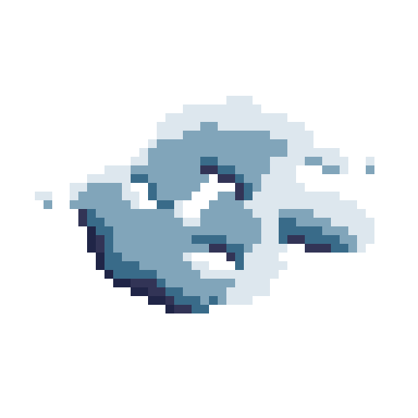
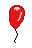
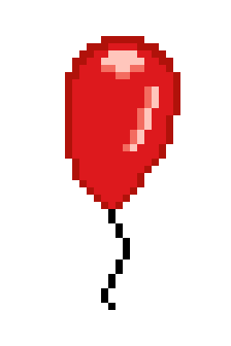
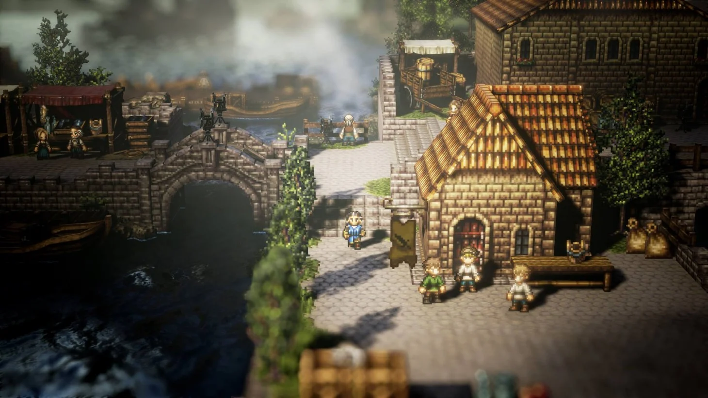
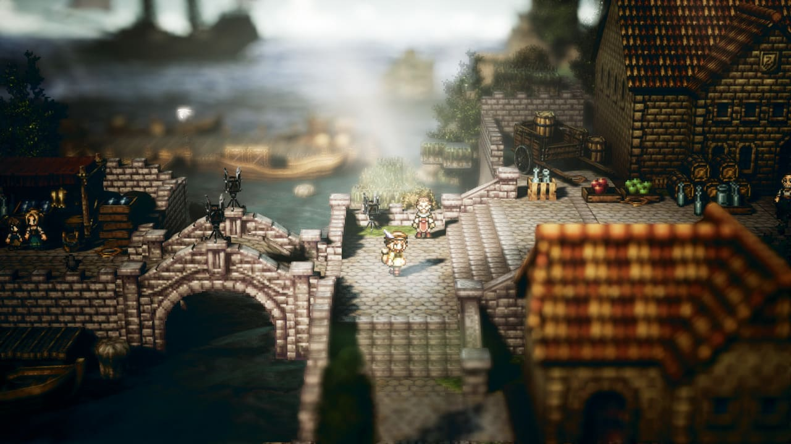
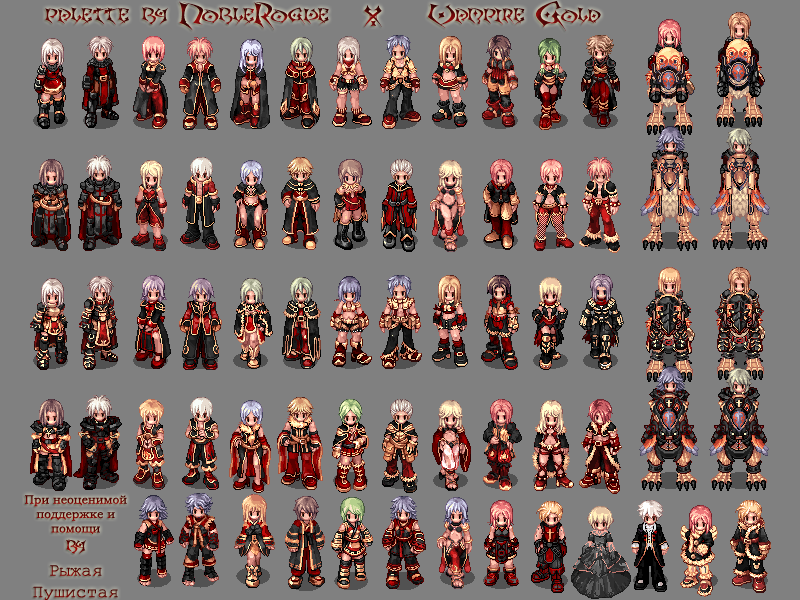
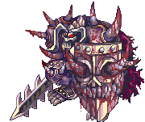

Day 4
I spent a huge chunk of time watching tutorials today. Here are the videos I watched.


But first, the art I did today!
Today’s Art
Isometric Cloud Attempt
I attempted this cloud with no reference. It went ok?

Afterward, I attempted an isometric balloon. It reads as a balloon, but I don’t think I quite got the isometric perspective.


Canvas Size
The canvas size thing was very interesting. I ended up doing a bunch of calculations and came up with a set of pixel canvas sizes.
On-Screen Sprite Sizes: 16 x any number below 22
- 64 x 64 (Tiny 16x4)
- 80 x 80 (Small 16x5)
- 128 x 128 (Medium 16x8)
- 256 x 256 (Big 16x16)
- 320 x 320 (Large 16x20)
- 352 x 352 (Gargantuan 16x22 FullScreen)
- 704 x 704 (Argentintuan 16x44 Overscan)
- 1,072 x 1,072 (Titan 16x67 Overscan)
Maximum On-Screen Sprite Canvas Size
- 640 x 352
The Size Targets
Here’s a big thing I did in GIMP.
{kind=link}
Art Styles
During the process of watching this tutorial I get thinking about the art styles that I wish to use in my project. I believe I have settled, or as much as I can settle, on two distinctive styles.
- Take inspiration from Octopath Travellers backgrounds.
- Emulate the isometric spites from Ragnarok Online.
Octopath Examples


Ragnarok Online Examples


See you tomorrow.